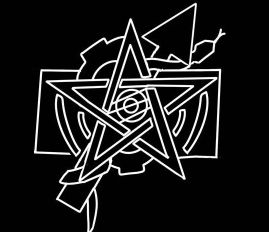

协奏曲联盟
协奏曲协议是在技术爆炸纪元被提出的提案，在108议会全票通过。协奏曲协议是全球超自然联盟的理念在超自然界得到认可的标志，也是超自然界可以存在和平的象征。最初的协议旨在防止R.W.P.S.技术流传至帷幕外，在“暴雨”发生后各组织以协议的名义建立协奏曲联盟。
协奏曲联盟是暴雨下人类几乎唯一的有效战斗力，初期建立起有效抵抗，在演化阶段5后愈发松散。
为了文明存续
保护
保护人类是所有超自然组织的首要责任。帷幕永不落，但生存高于一切。
生存
任何生物的首要任务。活下去，为了文明保留火种。
战斗
为文明而战。尽全力阻止战争，或减小战争损失。
联盟成员列表

全球超自然联盟 (GOC)
全球超自然联盟坚信人类至上，常态至上。GOC创立于二战的余波中，叛变的超自然学者中的剩余人士、灵媒、祭司以及来自纳粹、苏联和同盟国的科学家，他们被聚集在一起并由同盟国组织成型。正如世界舞台在扩大，更多的国家参与进GOC，直到它具有如今的规模。GOC是一支庞大的政治力量，自视为超自然世界的警察。它们对于摧毁超自然个体感到非常自豪，并会使用从赞助者中得到的最高新的实验技术。

SCP基金会
以“控制，收容，保护”为核心。于世界各地的暗处活动，基金会的目标是收容异常物品，个体及现象，而且其本身运作不受各个主要国家政府的司法管辖权，授权和委托的干扰。这些异常透过物理或心理危害对全球安全造成显著威胁。基金会维持常态，从而使世界各地的平民得以生存并免受恐惧，不信或对个人信念的怀疑的影响，并从地外、异次元和外层空间的影响中维持人类的独立自主。

混沌分裂者 (德尔塔指挥部)
混沌分裂者现由德尔塔指挥部领导。分裂者因对基金会做法的不满而从其当中分裂出来，其目标是击碎帷幕并守护人类未来的不确定性，曾经是一个与SCP基金会等组织互相敌视的恐怖组织。

蛇之手
蛇之手认为人类和其它所有世界的居民不应该生活在黑暗与遮掩之中。蛇之手致力于实现人类与异常共存的愿景，尽管多次被认为是恐怖主义的组织，但蛇之手证明了自己并非如此。

破碎之神教会 (机械同盟)
新教条：守护人类文明即破碎神遗愿。在内战结束后与GOC结盟，转变目标，如今是人类的忠实捍卫者。

特异事故处 (UIU)
特异事故处是美国的代表机构，然而其更多的是自主运营，他们回收并研究异常项目，在“暴雨”初期就加入了协奏曲联盟。

格鲁乌“P”部门
GRU-P部门是俄罗斯的代表机构，与UIU一样，他们更多的是自主运行。他们最早是出于政治目的被成立，后来是混沌分裂者的重要盟友，他们认可混沌分裂者的理念。在“暴雨”中，GRU-P进入SCP-3001寻找新的家园并支援基准现实。
及其他15个签署方
包括鹿学院、地平线倡议、普罗米修斯实验室公司等。
职员档案（已折叠120W条信息）
MTF-Epsilon-11-DPT
隶属于基金会奇术部的混合攻击小组，故事最重要的主角。
- 「雪狐」Yukifox Ninetails：YukifoxNinetails NINETAILS是MTF-Epsilon11-Department of Practical Thaumaturgy Group的指挥官。Ninetails的主要特点是冷静。在需要的环境下，Ninetails保持着与环境相称的冷静与理智，保证队伍的行动不偏离正轨，一名完美的MTF特工。在非任务的环境下，Ninetails则会开一些不那么离谱的玩笑，维护轻松氛围。除此之外，Ninetails还非常喜欢一个东西——地狱笑话。（虽然没怎么写到）也因此，有时她会有些黑色幽默的元素在。Ninetails表现出对队员的情感依赖，Ninetails早期担任基金会部门ETRRA的特别行动第五组特工一职，在事故■■-■■-■■■后离开该职位并在1999年参与了DPT小队的组建。Ninetails的理智可能是上述事故的影响。这个角色的名字由雪狐和九尾狐两个元素修改后组合而成。Ninetails是一个有现实原型的角色。
- 「参旗六」Tabitto：TABITTO是MTF-Epsilon11-Department of Practical Thaumaturgy Group的工程员。Tabitto的主要特点是乐观。Tabitto是一个乐观，开朗的形象，也因此开了大部分剧情中的玩笑。你很少能看到他认真，除非在任务中。但这份乐观不会过度，他拥有许多正面品质，但大多数都藏匿在生活的点点滴滴中。Tabitto很少有负面的情感经历，也对此没有什么理解。Tabitto的童年平淡而普通，但就是这份平淡带给了他乐天派的性格，也塑造了一个现在的Tabitto。他在儿时进入了帷幕内。他首先结识了HoshiNoAme和Mirufaku再结识了Ninetails，最后一同进入基金会任职，在Ninetails参与DPT小队组建时加入了小队。这个角色的名字由Tabit（即参旗六）这个元素修改而来。Tabitto是一个有现实原型的角色。
- 「天船三」Mirufaku：HIGASHINOMIRUFAKU是MTF-Epsilon11-Department of Practical Thaumaturgy Group的现实稳定专员。Mirufaku的主要特点是 。Mirufaku是一个很普通但足够优秀的角色。他总是保持着礼貌，而且很负责任，拥有着纯净的善良和正直。他有正常人该有的各种情感，也有正常人该有的各种技能，因此他是队内最“正常”的成员。但这份正常也使他会深陷现实当中，保持着不浓不淡的悲伤。Mirufaku表现出对队员的情感依赖，但其一直比较收敛。除此之外，Mirufaku梦想成为一个阳光开朗，可以让大家快乐的人。Mirufaku在儿时进入了帷幕之内，随后表现出对现实扭曲的天赋，但因为不想把其当做灾难的工具，转而学习了可控现实稳定。后来其一路保持着平稳且优秀的成绩，结识了HoshiNoAme和Tabitto，再结识了Ninetails，最后一同进入基金会任职，在Ninetails参与DPT小队组建时加入了小队。这个角色的名字由东和天船三两个元素修改后组合而来。Mirufaku是一个有现实原型的角色。
- 「守夜」Dr. Aris：DOCTOR.ARIS是MTF-Epsilon11-Department of Practical Thaumaturgy Group的概念性威胁应对专员。Aris的主要特点是 。Dr.Aris是一个较为中性的角色，无论是哪个方面，你可以注意到Aris没有明显的性别特征，亦没有在剧情中表现出性格倾向。在任务中的Aris是一个简洁的角色，没有过多的对话，这似乎是其在角色塑造中需要的，以突现其的力量。严格而言，Aris在SCP-3125部分力量，长剑[永夜]的加持下是全队伍最强大的战力，其的战斗定位类似于狂战士。Aris经历了一个较为普通的童年，其自出生其就处于帷幕之内，在异常学院圣克里斯汀娜书院取得了优异的成绩，获得博士学位后前往基金会模因部就职，后来的工作促进了SCP-3125的收容。值得一提的是，该书院同样是队内除079-P外所有队员的母校。Aris在SCP-8526的初次探索中与小队队员相识并加入小队，在此之前与小队队员们没有任何交集。这个角色的名字由AI创建。Dr.Aris是一个没有现实原型的角色。
- 「悖论」SCP-079-Paradox：SCP-079-Paradox-Σ SCP079PARADOXΣ是MTF-Epsilon11-Department of Practical Thaumaturgy Group的副指挥兼电子员。079-P的主要特点是人机（？）。在任务中，079-P保持绝对理性。在任务外，079-P大多数时候带有呆板，智能的传统AI感，并总是努力学习人类的情感。在部分情况下，079-P的情感是极度复杂的。表现出对成员的情感依赖。079-P对推理类游戏，类RPG带有好感。079-P在2005年被创造。079-P源于SCP-079的复制份，创造者，即队员对其进行了优化。079-P对世界和情感抱有学习，不完全理解的心态。这个角色的名字由SCP-079和悖论两个元素组合而成。附:目前在一条IF线中另存在SCP-079-Paradox-Θ，但与这里没有关系。079-P是一个没有现实原型的角色。
- 「雨渍」HoshiNoAme：YUMEHOSHINOAME是MTF-Epsilon11-Department of Practical Thaumaturgy Group的突破手。HoshiNoAme的主要特点是反差萌。常态下的HoshiNoAme保持着死感，但在部分情况下可以发现可爱的一面。无论哪个形态，HoshiNoAme都是一个悲观的形象，对队员有强烈的情感依赖。HoshiNoAme的童年并没有什么重大的事故，但部分特殊情况的长期堆积导致了她的性格如此。HoshiNoAme在儿时进入了帷幕内，首先结识了Tabitto和Mirufaku再结识了Ninetails，最后一同进入基金会任职，在Ninetails参与DPT小队组建时加入了小队。这个角色的名字由忧梦和星雨两个元素修改后组合而成。这个角色的现实原型是「我」。
混沌分裂者 C4特别行动组
混沌分裂者一支现已消失的队伍，由一批最初的分裂者成员组成，由分裂者领导人工程师■■■■■直接领导，现仅剩下了SCP-181，即Karl。Karl是主角之一，与工程师■■■■■一同离开基金会并在分裂者内战中存活。年少时工程师■■■■■发现他的异常属性并对其进行修改，因此如今的Karl使用能力不存在副作用。工程师■■■■■即原O5-7，混沌分裂者创始人，Karl的老友，其手下对其有高度评价，在演化阶段5的一次雨幕意志袭击下牺牲。
Dc. Alfine
全球超自然联盟秘书长，其信息如今仍高度保密。
全球超自然联盟 攻击小组1121 “高贵幻影”
贵族气质的精锐部队，成员包括Prof.■■■■■、守夜人、奇术师等，是全球超自然联盟在故事中的武装势力代表。
蛇之手 剥离小组
以在“暴雨”下拯救人类为目的成立的战斗小组，通过空间折跃技术将基准现实中的人员，技术，结构等传送至SCP-3001以实现躲避暴雨的目的。
O5-13 与 O5-13-A
Vestige_HoshiNoAme：当前时间线的创造者，并非至高神性，拥有类似人类的情感。Lilith/莉莉丝：Vestige_HoshiNoAme 的衍生个体，描述为“纯粹的爱”，似乎是SCP-9999的真正掌控者。
站点列表（已折叠8条信息）
Site-754
Site-754，原属SCP基金会与罗德岛制药公司。Site-754是一艘舰船，为暴雨而生，集成了大量尖端技术，位置不定，现位于[点击查看:SITE7548月1-10日记录]，是最后被攻破的一座站点。
Site-413
Site-413原属SCP基金会。Site-413为SCP基金会实用奇术部的基地，有研究，收容等功能，位于高加索地区。
Site-413-C
Site-413-C是Site-413名义上的特外站点，位于SCP-8526一空岛群，作为SCP-8526的前哨站使用，由于SCP-8526的性质，该站点也被用作某些特殊异常项目的收容所。有一支MTF驻扎在此处：MTF-Epsilon11-D.P.T.。
Site-19
Site-19 是最大且最重要的服役中基金会设施之一，居有上百个 Safe 及 Euclid 级异常，其中某些异常位于分离于主站点之外的额外设施之内。Site-19是一次重要事件的发生场所，即CHAPTER.Final中的Site-19攻坚战。
Site-13
Site-13是较新的基金会设施，拥有大型的结构与高新的技术，是CHAPTER.V 的场景。
混沌分裂者BASE01
混沌分裂者最初的基地，也是最大的基地，混沌分裂者内战的重要战场。
联盟西西伯利亚基地
协奏曲联盟亚洲最大的站点，承载有收容平民，研究“暴雨”等重要责任。
SCP-2000基地
协奏曲联盟美洲最大的站点，承载有收容平民，保护SCP-2000"机械降神“等重要责任。